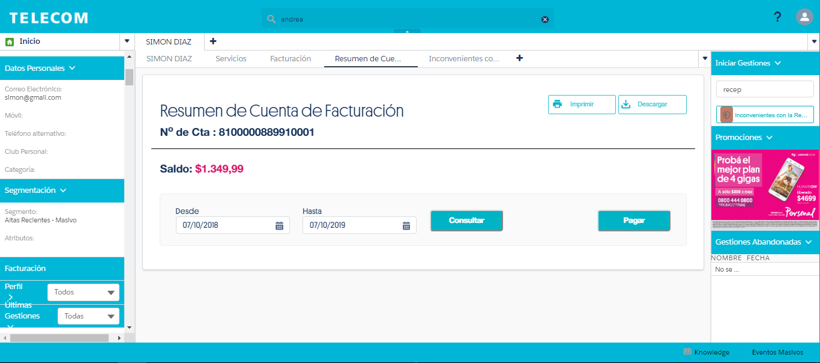

Se utiliza cuando un cliente informa que no recibió la factura.
Si los comprobantes no se encuentran digitalizados, la gestión quedará derivada al Back Office para generar un ticket a mesa de ayuda para solucionar el inconveniente.
Podrás consultar esta funcionalidad en la Base de Conocimientos con las palabras clave: No Recepción De Factura, No Recibió Factura, Factura, Reimpresión FT, Reimpresión Factura, Resumen De Cuenta, No Recibe FT
Reimpresión de factura (disponible únicamente en Oficinas Comerciales)
Si el cliente solicita la reimpresión de su factura y no acepta el envío por mail, SMS o Correo, la impresión deberá realizarse desde el Resumen de Cuenta:
Recordá que ingresás al Resumen de Cuenta desde el botón “Facturación” en la columna izquierda. Luego deberás presionar el botón Imprimir que se encuentra en el extremo superior derecho.
